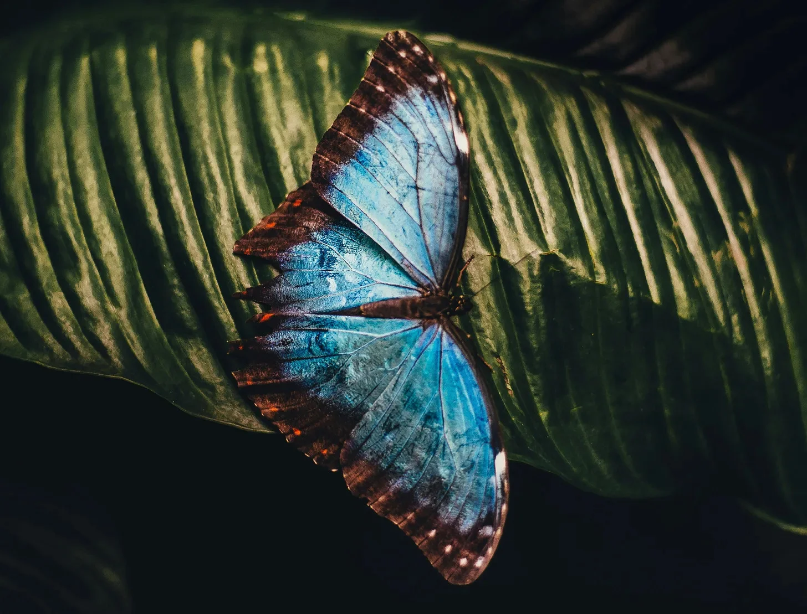

지구상에는 약 17,500종의 나비가 있는데, 알고 보니 이들 모두가 우리를 상대로 음모를 꾸미고 있었다.
[There are approximately 17,500 species of butterflies on Earth, and as it turns out, every single one of them is plotting against us.]
마커스 웹 박사가 이 사실을 발견했을 때는 93시간 동안 잠을 자지 않은 상태였는데, 보통이라면 이런 상태에서의 발견은 완전히 신뢰성을 잃었을 것이다. 하지만 수면 부족의 특이한 점은, 때로는 우리가 현실에 대해 스스로에게 하는 편안한 거짓말들을 벗겨내어, 우리 눈앞에서 펄럭이는 끔찍한 진실만을 남긴다는 것이다.
[Dr. Marcus Webb hadn’t slept in ninety-three hours when he made this discovery, which ordinarily would have discredited his findings entirely. The thing about sleep deprivation, though, is that sometimes it strips away the comfortable lies we tell ourselves about reality, leaving only the horrifying truth fluttering in our faces.]
그는 웨스트 노웨어 대학교의 실험실에 앉아 있었고, 주변에는 영원히 전시된 채로 날개를 펼친 제왕나비와 호랑나비의 유리 표본 케이스들이 있었다. 동료들은 이미 모두 퇴근한 지 오래였고, 그의 카페인에 절은 뇌 속 윙윙거림과 비슷한 형광등의 끊임없는 윙윙거림 소리만이 표본들과 함께 그와 있었다.
[He sat in his lab at the University of West Nowhere, surrounded by glass cases of mounted Monarchs and Swallowtails, their wings spread in eternal display. His colleagues had long since gone home, leaving him alone with his specimens and the persistent buzz of fluorescent lights that matched the buzz in his caffeine-soaked brain.]
“날 속일 순 없어."라고 그는 특히나 잘난 체하는 모습의 모르포 나비를 향해 중얼거렸다. 분명히 불가능한 일이었음에도 불구하고, 그 표본의 금속성 날개가 인공 조명 아래서 움찔거리는 것처럼 보였다. 분명히 그럴 리가 없었다.
[‘You’re not fooling anyone,’ he muttered to a particularly smug-looking Blue Morpho. The specimen’s metallic wings seemed to twitch under the artificial light, though that was clearly impossible. Clearly.]
첫 번째 실제 증거는 그가 패턴을 발견했을 때 나타났다. 숙면을 취했다고 보고한 모든 사람들은 전날 최소 세 마리의 나비를 목격했다. 예외가 없었다. 그는 6개월 동안 수천 명의 대상자들을 인터뷰하고, 나비 목격 횟수와 수면의 질을 대조 분석했다. 통계학적으로 말해서, 이런 상관관계는 젠장 말도 안 되는 것이었다.
[The first real proof came when he noticed the pattern. Every person who reported having a good night’s sleep had encountered at least three butterflies the previous day. Every single one. He’d compiled the data over six months, interviewing thousands of subjects, cross-referencing butterfly sightings with sleep quality. The correlation was, statistically speaking, fucking impossible.]
그 다음은 녹화물이었다. 그는 정상적인 나비의 행동을 포착하기 위해 정원에 고속 카메라를 설치했다. 하지만 대신 발견한 것은 나비들이 마치 소규모 회의를 하는 듯한 장면들이었다. 한 프레임에서는 작은 실잠자리나비가 극도로 작은 메모장에 회의록을 작성하는 것처럼 보였다.
[Then came the recordings. He’d set up high-speed cameras in his garden, expecting to capture normal butterfly behavior. Instead, he found footage of them holding what appeared to be tiny committee meetings. One frame showed a Painted Lady apparently taking minutes on a microscopic notepad.]
"저들이 우리한테서 뭔가를 수확하고 있어,” 그는 텅 빈 실험실을 향해 속삭였다. “우리가 자는 동안에 말이야.”
['They’re harvesting something from us,’ he whispered to his empty lab. 'While we sleep.’]
이번에는 케이스 안의 나비들이 확실히 움직였고, 그들의 날개는 마치 현장에서 발각된 공모자들처럼 바스락거렸다. 웹 박사는 그 움직임을 녹화하기 위해 휴대폰을 잡았지만, 그의 손이 너무 심하게 떨려서 휴대폰을 제대로 잡을 수가 없었다. 게다가 배터리가 1%밖에 남지 않았는데, 이것도 분명 나비들의 짓이라는 걸 그는 알고 있었다.
[The butterflies in their cases definitely moved this time, their wings rustling like guilty conspirators caught in the act. Dr. Webb grabbed his phone to record the movement, but his hands shook too badly to hold it steady. Besides, his battery was at 1%, which he knew was somehow their doing.]
그는 노트를 꺼내들었고, 그의 필체는 점점 더 절박한 낙서가 되어갔다: '나비 = 차원 간 수면 기생충??? 모르페우스와 날개에 관한 고대 신화 확인할 것. 돈의 흐름을 추적하라 - 왜 침실 장식에 나비 모티프가 이렇게 많은 거지??’
[He pulled out his notebook, his handwriting deteriorating into desperate scrawls: 'Butterflies = interdimensional sleep parasites??? Check ancient mythology re: Morpheus + wings. Follow the money - why are there so many butterfly motifs in bedroom décor??’]
다음 날, 동료들은 그의 실험실이 깔끔하게 정돈된 것을 발견했다. 모든 표본들이 완벽하게 진열되어 있었고, 노트들은 정리되어 있었으며, 컴퓨터 배경화면은 아름다운 정원 사진으로 바뀌어 있었다. 웹 박사 본인은 책상에서 잠들어 있는 것이 발견되었는데, 마치 번데기처럼 평화로운 모습이었고, 그의 이마에는 흠 없이 완벽한 한 마리의 나비가 앉아 있었다.
[The next day, his colleagues found his lab immaculate. All specimens were perfectly mounted, his notes were organized, and his desktop background had been changed to a lovely picture of a garden. Dr. Webb himself was found fast asleep at his desk, peaceful as a chrysalis, with a single pristine butterfly perched on his forehead.]
그는 결국 자신의 발견을 발표하지 못했다. 시도할 때마다 미스테리하게 컴퓨터 앞에서 잠들고 말았다. 그의 임시보관함에는 같은 경고문의 서로 다른 버전이 47개나 있었지만, 어느 것도 완성되지 못했다. 나비들이 승리한 것이다.
[He never did manage to publish his findings. Every time he tried, he’d mysteriously fall asleep at his computer. His draft folder contained forty-seven versions of the same warning, none completed. The butterflies had won.]
요즘 웹 박사를 방문하면, 그가 광활한 나비정원을 돌보며 수백 마리의 나비들이 그의 주위를 날아다니는 동안 평온하게 미소 짓고 있는 모습을 볼 수 있다. 그는 이제 매일 밤 완벽한 숙면을 취한다. 가끔 방문객들은 그가 마치 회의록 같은 것을 흥얼거리는 소리를 들었다고 맹세하곤 한다.
[These days, if you visit Dr. Webb, you’ll find him tending to his extensive butterfly garden, smiling serenely as hundreds of wings flutter around him. He sleeps perfectly now, every single night. Sometimes, visitors swear they can hear him humming what sounds like committee meeting minutes.]
한편 나비들은 계속해서 그들의 일을 수행하고 있다. 그들은 여름 바람을 타고 떠다니며, 작은 이사회 회의에 참석하고, 인간들의 수면 데이터가 담긴 스프레드시트를 세심하게 관리한다. 그리고 만약 당신이 최근 유독 잘 자고 있다면, 스스로에게 물어보아야 할 것이다: 오늘 나비를 몇 마리나 보았는가?
[The butterflies, meanwhile, continue their work. They float on summer breezes, attend their tiny board meetings, and carefully maintain their spreadsheets of human sleep data. And if you’ve been sleeping particularly well lately, perhaps you should ask yourself: how many butterflies did you see today?]
하지만 너무 깊이 생각하지는 마시라. 결국, 무지가 곧 행복이고, 그 행복이야말로 그들이 우리에게서 수확하고자 하는 바로 그것이니까.
[Just don’t think about it too hard. After all, ignorance is bliss, and bliss is exactly what they’re farming us for.]